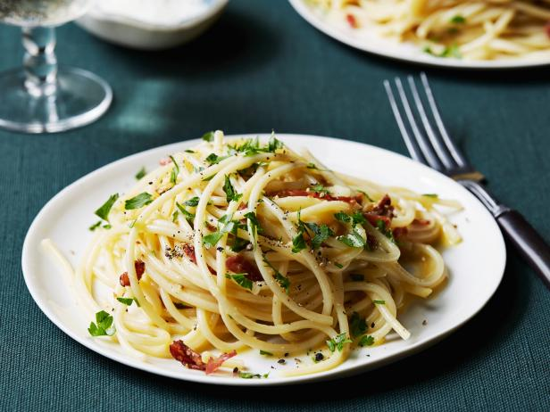

A beautiful homemade carbonara dish that is easy to make!
Description
This recipe may seem daunting but is quite easy once you get the hang of it. This recipe does not include cream which might shock some, but this is pretty close to authentic. I've read and even been told that Italians making this dish don't use cream at all. Once you taste this, you'll realize that you don't even miss the cream. Plus you can save on calories.
The most important things to remember are to:
use quality ingredients
prep by cutting all ingredients before you start cooking
have all your ingredients nearby within reach
Happy cooking!
Ingredients
(serves 3 generous portions or 5 small portions)
8 oz good quality pancetta (some people use guanciale but it's hard to find and I don't like the taste)
16 oz pack of mushrooms such as bella or cremini
herbs
1/2 tbsp thyme
1/2 tbsp oregano
1/2 tbsp basil
1-2 cups of parmesan cheese or pecorino cheese (or can do a mix of both), grated finely (do not use the the store-bought pregrated kind that comes in the green bottle, fresh is best)
1 whole egg + 1 egg yolk, both beaten
worchestershire sauce
olive oil
16 oz long noodles such as linguine or bucatini (spaghetti is also good in a pinch, do not use angel hair pasta, it's way too thin and would get weighed down by the sauce)
handful of parsley for garnishing
salt and pepper
Steps
Bring a huge pot of water to boil and pour in table salt. There should be enough salt in the water to make the water taste like the sea. This is important so that the pasta is flavored while it's boiling.
Slice the entire package of mushrooms into slices. They can be whatever thickness you like. I like them about medium thickness.
In the meantime, cut the pancetta into small 1/2" cubes. They should be big enough for bite-sized pieces.
Turn on the stove and heat up a pan large enough to accomodate the pancetta, mushrooms, and soon later on the pasta. Pour a few tablespoons of olive oil and let heat up. Once the pan is hot enough (should not be smoking!), put in the cubed pancetta and stir until cooked, make sure the heat is about medium heat. Pancetta does not need to be crispy, but we are trying to render out the fat from the pancetta by cooking it slowly.
If water for the pasta is boiling, add in your pasta and cook to just under al dente. The pasta will continue cooking in the pan later.
Remove the pancetta from the heat once you see a lot of the fat has been rendered out and it's been a few minutes, put aside in a bowl, they will be put back in later. Leave the fat from the pancetta in the pan.
In the same pan that was used for the pancetta, put in the sliced mushrooms and stir for a few minutes.
Add seasonings to the mushrooms: salt and pepper to taste, 1/2 tbsp each of oregano, thyme, basil. Stir the mushrooms again and add a few dashes of worchestershire sauce.
Add back in the pancetta to the mushroom pan and stir together. Turn heat to low. Cook together for a few minutes so that the flavors meld together.
Add a cup of the grated cheese to the beaten egg. Add some cracked black pepper and a little salt to the mixture. Mix well.
Once pasta is boiling and cooked to under al dente, transfer directly to the pancetta pan. Save a cup of the leftover pasta water and set on the side.
Turn the heat for the pancetta pan to medium and heat altogether. After a minute, turn off the pan and take off the heat. Add the beaten egg cheese mixture to the pan and stir quickly so that there are no clumps. The egg mixture should be incorporated into the pasta and not scramble up.
Add a little bit of the reserved pasta water to the pan if the mixture is looking too dry. It should be glossy and smooth.
Add a few sprigs of chopped up parsley and some additional cheese for taste. I personally like to add red chili flakes as well. Enjoy!